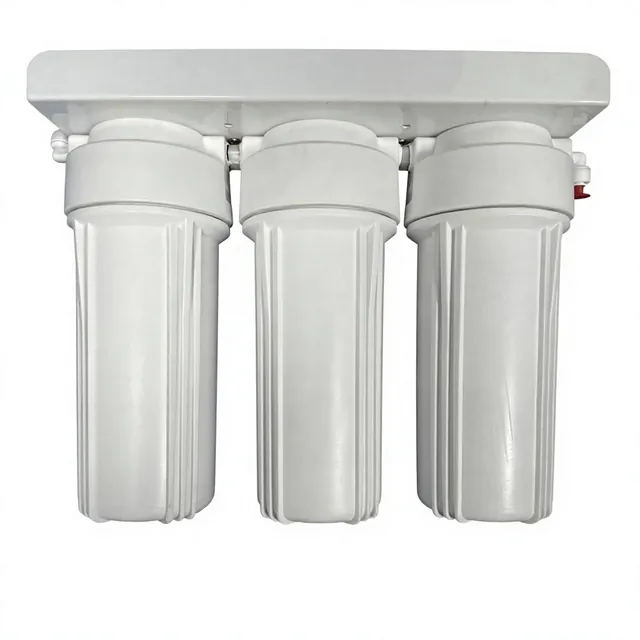
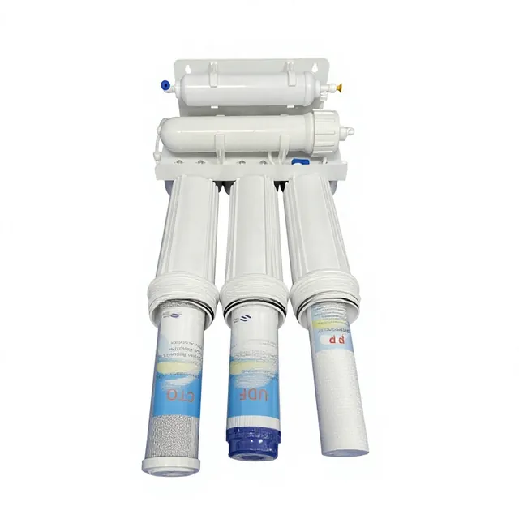
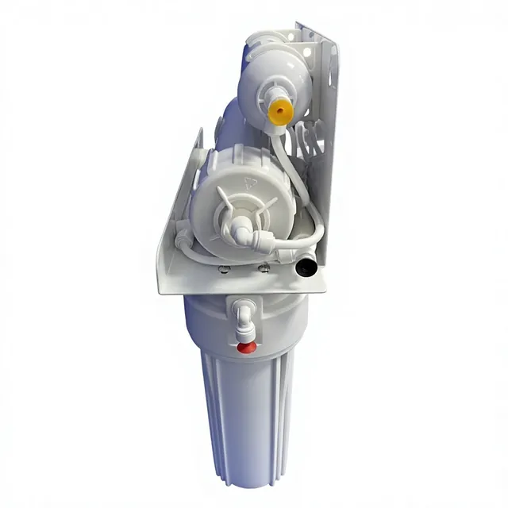
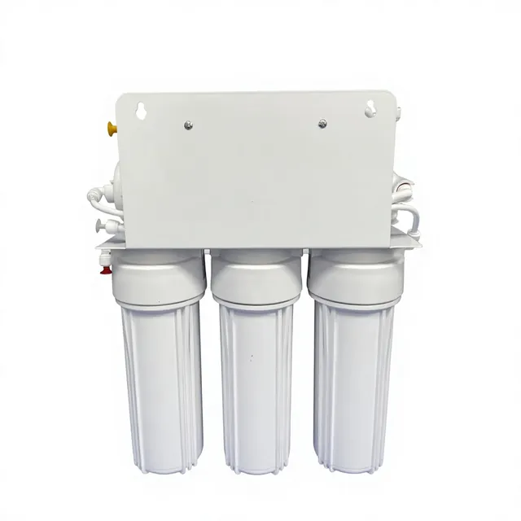
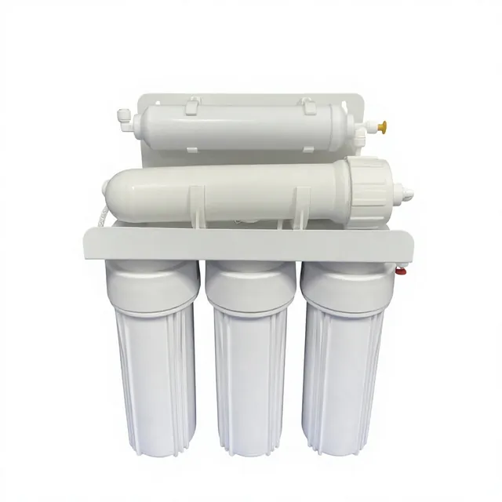
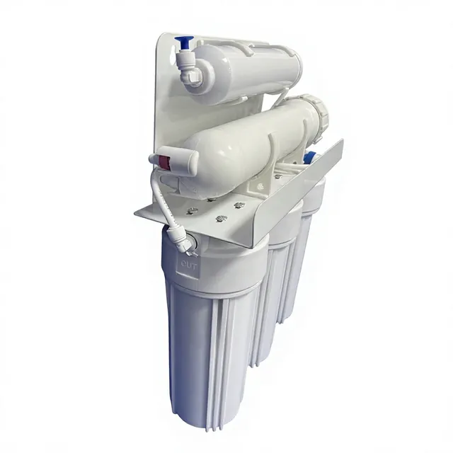

Máy lọc nước RO năm cấp lọc không dùng bơm
Thiết bị thẩm thấu ngược năm cấp không dùng điện dành cho các thị trường có áp suất đầu vào từ hệ thống nước máy đô thị ổn định. Thiết bị kết hợp tiền lọc cặn, than hoạt tính, lọc màng và lọc hoàn thiện bằng than sau màng, với bố trí nhỏ gọn treo tường hoặc dưới bồn rửa dành cho các chương trình của nhà phân phối. Thông số chính bao gồm Lắp đặt: Hệ thống nước uống tại điểm sử dụng, treo tường hoặc dưới bồn rửa.

Thiết kế không dùng bơm dành cho nguồn nước máy có áp suất ổn định
Mẫu sản phẩm này loại bỏ bơm tăng áp khỏi cấu hình thẩm thấu ngược gia đình tiêu chuẩn, giúp giảm độ phức tạp của hệ thống dây điện, rung động và số phụ tùng bảo dưỡng liên quan đến bơm khi áp suất đầu vào phù hợp. Nên ưu tiên xem xét mẫu này cho nhà bếp căn hộ, lắp đặt trong tủ và các chương trình cung cấp sản phẩm thay thế qua kênh bán lẻ có thể xác nhận áp suất nước máy tại địa phương trước khi đặt hàng.
Quy trình lọc năm cấp
Trình tự tiêu chuẩn: lõi tiền lọc cặn PP, than hoạt tính UDF/GAC, than khối CTO, lọc màng và lõi than sau màng T33. Người mua có thể xác nhận nhãn lõi lọc, chiều dài lõi lọc, bộ ống dẫn và bộ vòi cho gói sản phẩm mang nhãn hiệu riêng của mình.
Thông số kỹ thuật
| Mẫu máy | Máy lọc nước RO năm cấp lọc không dùng bơm |
|---|---|
| Trình tự lọc | Lọc cặn PP + than UDF/GAC + than CTO + màng RO + lõi than sau màng T33 |
| Lắp đặt | Hệ thống nước uống tại điểm sử dụng, treo tường hoặc dưới bồn rửa |
| Công suất | Không có bơm tăng áp; yêu cầu áp suất nước máy đô thị phù hợp |
| OEM/ODM | Các tùy chọn về logo, nhãn lõi lọc, ống dẫn, vòi, tài liệu hướng dẫn sử dụng và thùng carton |
| Số lượng đặt hàng tối thiểu (MOQ) | Xác nhận sau khi xác định yêu cầu về thương hiệu, đóng gói và bộ lõi lọc |
Ứng dụng
Phù hợp với nhà bếp gia đình, căn hộ, khu bếp phụ của văn phòng nhỏ và các chương trình của nhà phân phối cần cấu hình máy lọc đơn giản không dùng bơm điện. Thiết bị không được thiết kế cho nước cấp có áp suất thấp, trừ khi dự án bổ sung giải pháp tăng áp bên ngoài.
Hỗ trợ OEM và hỗ trợ về chất lượng
Trước khi báo giá, xác nhận áp suất nước cấp, công suất màng, bộ lõi lọc, kiểu vòi, màu ống dẫn, thiết kế nhãn, ngôn ngữ trên thùng carton và hồ sơ cho thị trường đích. Mẫu có thể được chuẩn bị phù hợp với cấu hình đã phê duyệt trước khi sản xuất hàng loạt.
Hình ảnh sản phẩm







Video sản phẩm
Câu hỏi thường gặp
Khi nào thiết kế không dùng bơm phù hợp?
Thiết kế này phù hợp khi thị trường mục tiêu có áp suất đầu vào từ hệ thống nước máy đô thị ổn định và người mua muốn cấu hình máy lọc đơn giản hơn, không có bơm tăng áp, biến áp hoặc dây điện cho bơm.
Sản phẩm được cung cấp với trình tự lọc nào?
Trình tự tiêu chuẩn là lọc cặn PP, than UDF/GAC, than khối CTO, màng RO và lõi than sau màng T33. Nhãn lõi lọc và các bộ lõi thay thế có thể được điều chỉnh cho các đơn hàng OEM đã xác nhận.
Người mua cần xác nhận những gì trước khi báo giá?
Xác nhận áp suất đầu vào, công suất màng dự kiến, không gian lắp đặt, bộ vòi và ống dẫn, thiết kế nhãn, ngôn ngữ của tài liệu hướng dẫn sử dụng, kiểu thùng carton và hồ sơ cho thị trường đích.
Lưu ý lựa chọn dành cho người mua
Máy lọc nước RO năm cấp không dùng bơm phù hợp với các chương trình của nhà phân phối cần máy lọc nước RO không dùng bơm cho khu vực có áp suất nước máy ổn định. So sánh sản phẩm theo cấu hình bố trí hệ thống thẩm thấu ngược năm cấp, khả năng vận hành không dùng điện, vị trí giá đỡ, thông số màng, lõi lọc hoàn thiện T33 và quy cách đóng gói bộ lõi thay thế.
Các chi tiết cần xác nhận trước khi báo giá
- Áp suất nước máy tại địa phương và điều kiện lắp đặt không dùng điện
- Cấu hình bố trí hệ thống thẩm thấu ngược năm cấp và trình tự lọc
- Phương pháp cố định khi treo tường hoặc lắp dưới bồn rửa
- Bộ lõi lọc thay thế, nhãn và bao bì dành cho nhà phân phối
Yêu cầu báo giá OEM
Lưu ý cho người mua máy lọc nước RO năm cấp không dùng bơm
Đối với máy lọc nước RO năm cấp không dùng bơm, hãy sử dụng mẫu này khi người mua cần cấu hình máy lọc được xác định rõ, với thông tin lắp đặt thực tế, kế hoạch thay lõi lọc và kiểm soát thùng carton xuất khẩu. Trang sản phẩm nên giải đáp cách tích hợp thiết bị vào chương trình cung cấp nước uống cho nhà bếp, văn phòng hoặc mục đích thương mại trước khi lặp lại các tuyên bố chung về RO hoặc OEM.
Thông tin cần xác nhận
- Nhu cầu sử dụng hằng ngày dự kiến và công suất yêu cầu
- Các cấp lọc và bộ lõi lọc thay thế
- Yêu cầu về tủ máy, bảng điều khiển, vòi và bao bì
- Tài liệu cho thị trường đích và việc ghi nhãn thùng carton